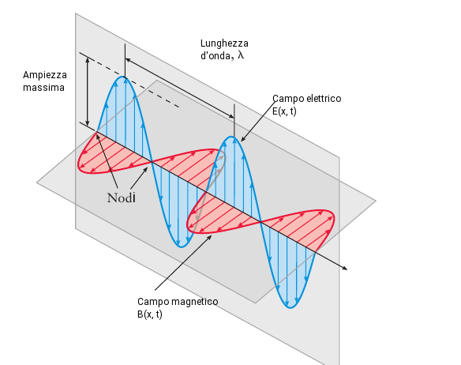
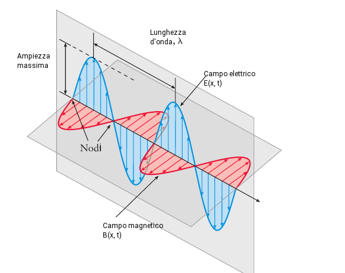
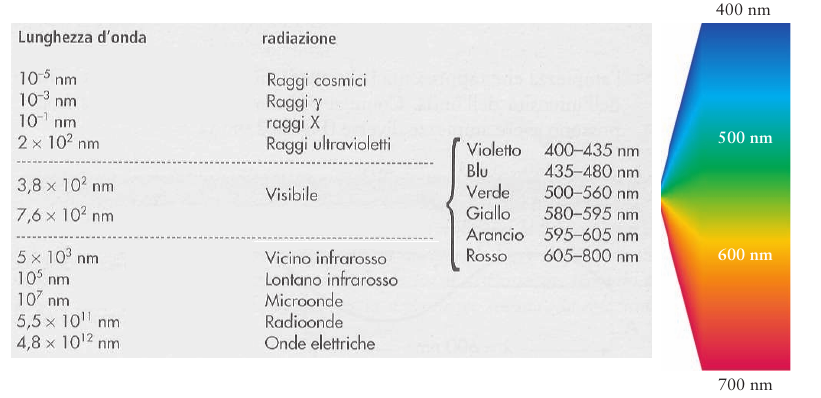

Onde elettromagnetiche
All'inizio del 1800 si era consolidata grazie a diversi esperimenti come quello di Young, l'idea che la luce fosse un'onda. Nel 1865 il fisico scozzese james Clerk Maxwell riuscì nell'impresa di una grande unificazione di tutti i fenomeni elettromangetici sino a quel momento osservati in un'unica teoria dell'elettromagnetismo. Nella sua teoria la luce viene descritta come radiazione elettromagnetica, costituita da un campo elettrico e da un campo magnetico, oscillanti nello spazio su piani perpdendicolari l'uno all'altro, ad una frequenza ν. Questi campi sono prodotti da particelle cariche oscillanti. La radiazione elettromagnetica diversamente da altri fenomeni ondulatori come il suono, non ha bisogno di alcun mezzo per propagarsi, e trasporta sia energia che momento. L'onda elettromagnetica è descritta dalle equazioni dei campi oscillanti. Se pensiamo ad un'onda che si propaga nella sola direzione x, l'ampiezza del campo elettrico sarà descritto dall'equazione:

1.0
La velocità della luce, c, nel vuoto è una costante pari ha:
 

Ponendo un rilevatore in un certo punto x, lungo l'asse delle ascisse potremmo osservare un campo elettrico E(x, t) oscillare secondo la 1.0. Le grandezze che caratterizzando un'onda sono:
la lunghezza d'onda λ, che rappresenta la distanza tra due creste.
la frequenza ν, che rappresenta le oscillazioni del campo elettrico (magnetico) in un punto dello spazio al secondo.
la velocità v, di propagazione dell'onda relazionata con la frequenza e lunghezza d'onda tramite:

L'insieme delle onde elettromagnetiche a diverse lunghezze d'onda costituisce lo spettro elettromagnetico, di cui la luce visibile è solo una porzione compresa tra le lunghezza d'onda 400 nm (luce violetta) e circa 800 nm (luce rossa).
